On-site system implementation
See how things run, pick one pain point, and take it live on the floor.

速喜科技 · SUXI AI
Not just a report. We come to your production line, connect to the work orders, reports and systems you have today, and stay until your team uses it every day.
Bring us one problem from your line. We'll tell you if we can fix it.Email suxi.ai@gmail.comBEFORE WE ARRIVE
We start with the one thing that hurts most — defects you can't trace, utilization you can't measure, or reports copied by hand every day. Together we decide whether it's worth doing, and whether a government subsidy may apply.
ON SITE
No rip-and-replace. Your current systems, spreadsheets and paper work orders — we connect to whatever we can. Get one line running first, then the next.
WHEN WE LEAVE
The system is live on the floor, your people know how to run it, and the SOPs and handover are written down. We leave; the system keeps running. Not an outsourcing job that never ends.
See how things run, pick one pain point, and take it live on the floor.
If the project is a good fit, we help prepare the application.